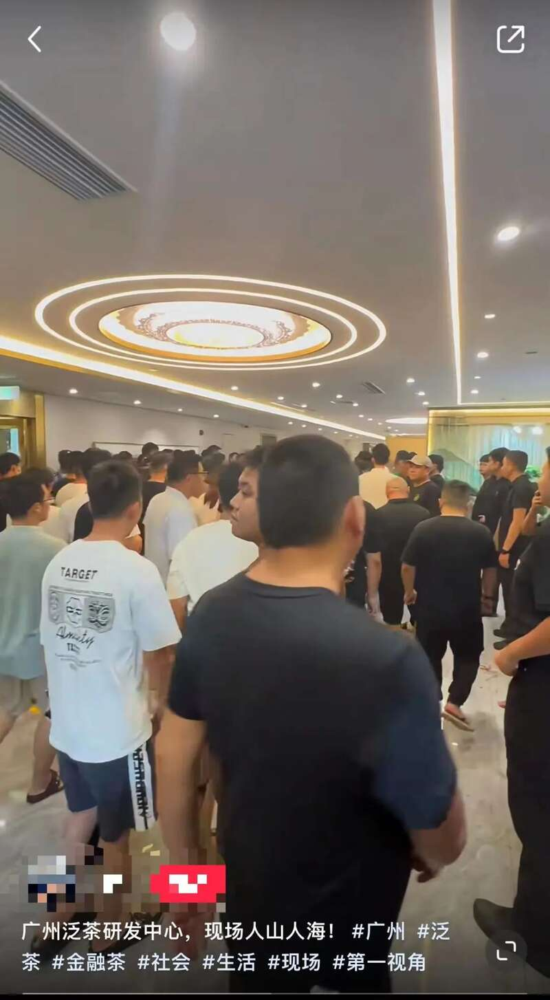
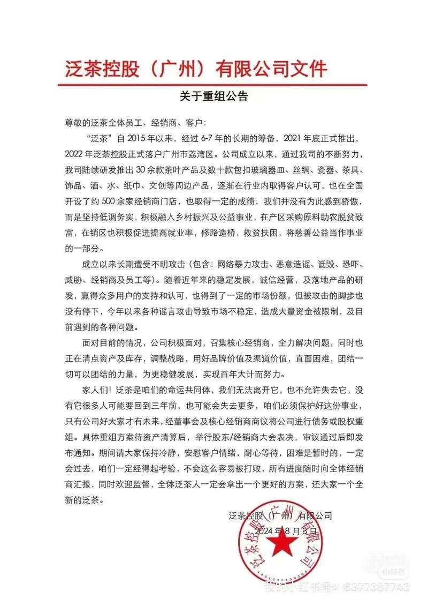
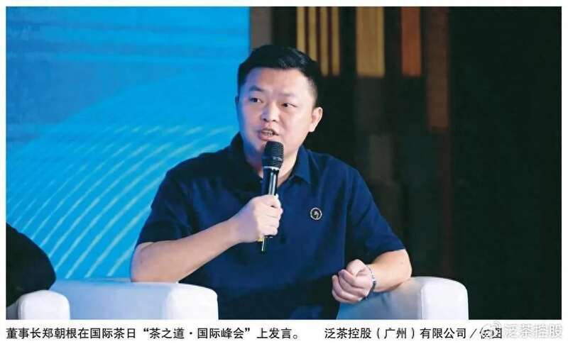
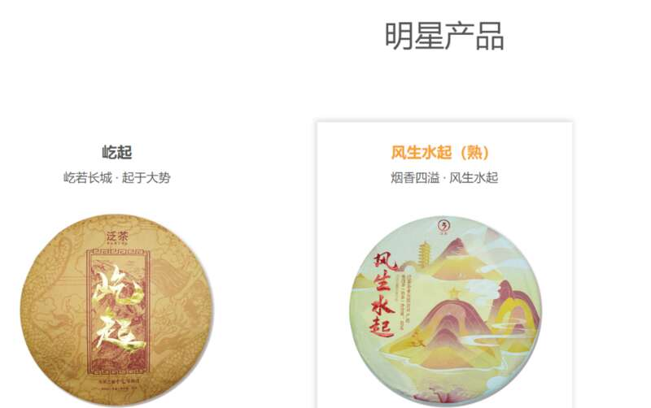

“茶叶华尔街”芳村又现明星茶爆雷。
据南方都市报报道，近日，主营普洱茶的泛茶控股（广州）有限公司（以下简称“泛茶”）发布一则《关于重组公告》的通知，称经董事会及核心经销商商议将公司进行债务或股权重组。
这一公告背后，成立仅两年、被称为茶行业“新黑马”的泛茶正陷入爆雷危机，据相关人士爆料，泛茶此次爆雷涉及金额高达百亿。在社交平台上，更有多名用户发视频爆料，称近日大批经销商来到泛茶研发中心，多人情绪激动，高喊“退钱”。

图片来源：蓝鲸财经
据财联社报道，一位福建籍的茶商对记者表示，去年底芳村爆雷了“昌世茶”，茶商和投资者都还有心理阴影，对这类事件比较敏感。另外，一般投资者前期投入不少资金，即使感觉公司有问题也不敢过于激烈声讨，存在一定侥幸心理。
泛茶宣布重组
泛茶此次爆雷事件，在茶行业尤其是广州芳村茶叶市场引发强烈反响。据了解，早在7月22日，泛茶就突然发布《公告》称，近日，公司及部分经销商银行账户被冻结，银行回复预计于2024年8月上旬解封。为确保交易安全，公司建议各平台、经销商将所有订单的交付时间，往后顺延10天。
7月24日，泛茶再次发布《关于规范交易行为的公告》，称严禁承诺保本、返利的交易行为，坚持现货交易原则。
8月3日，泛茶又向经销商发布《关于重组公告》，公告中将其目前面临的问题归结于“谣言攻击”，称泛茶“成立以来长期遭受不明攻击(包含：网络暴力攻击、恶意造谣、诋毁、恐吓、威胁、经销商及员工等)。随着近年来的稳定发展，诚信经营，及落地产品的研发，赢得众多用户的支持和认可，也得到了一定的市场份额，但被攻击的脚步也没有停下，今年以来各种谣言攻击导致市场不稳定，造成大量资金被限制，及目前遇到的各种问题。”
公告指出，经董事会及核心经销商商议将公司进行债务或股权重组。具体重组方案待资产清算后，举行股东/经销商大会表决，审议通过后即发布通知。
据南方都市报报道，一位知情人士告诉记者，“目前泛茶爆雷已经是事实，整个广州茶叶市场的人都在关注，也还没有什么结果。”


参与者：很多人借贷炒茶，六七十岁老人也贷款押上去
据蓝鲸新闻报道，过去三年，泛茶是芳村的“明星”，号称月息超过15%，在芳村不买泛茶的人反而承担着一定的精神压力，身边蔓延着“买一点没事”，“个个都买不用怕没那么快收网”……
一位资深的芳村茶叶店主告诉记者，泛茶爆雷并不突然，“这又不是正经普洱，本身就是资金盘买卖，而且也运作好几年了，什么时候爆都有可能。”他表示，泛茶这次波及范围非常广，“我身边八成都参与了，大几百万投资的人不少。”
一位参与“泛茶事件”的参与者告诉记者，自己附近很多人都借贷“炒茶”，“我们镇上很多人贷款押上去，很多都是六七十岁的人。”
天眼查显示，泛茶成立2021年，注册资金1000万，法人代表郑朝根，先后在东莞、云南和广州成立8家公司。

图片来源：泛茶官方微博
公司官网介绍，其是一家以老茶为核心产品的茶企，总部位于中国广州，合作双万亩茶园基地（云南+福建），拥有泛福大厦及超过500家的实体店；泛茶团队90%以上成员均为90后00后，文化素养、创新能力、协同能力、执行能力均高于同业。
公司官网截图
郑朝根此前在公开场合表示：“泛茶的初心是要做中国的奢侈品茶，不是做用来炒作的茶，泛茶未来要做的是中国特色奢侈品集团。”此话背后，泛茶的产品可谓价格不菲，多款产品价格均在大几万元，此前一款“屹路长虹”茶饼曾炒到12万元一件。还有网传图片显示，其一款名为“2021屹起”的产品报价高达610000元/提，折算下来约244元/克。

另外，早在2022年公司成立之初，泛茶就提出“百城千店”计划，称将以“大城市多开店，小城市开大店”的渠道模式，布局全国，至今不到两年时间就已开出500多家线下门店。
值得注意的是，广州市荔湾区官微“广州荔湾”在7月25日发布《关于防范以“金融茶”“理财茶”等名义实施非法集资的风险提示》：“金融茶”“理财茶”的业务模式日渐盛行。茶企打着销售茶叶的名义，向消费者销售茶叶但不交付实物，承诺一定期限后以本金加利息的方式予以回购。
官方提示：这类业务模式脱离商品交易实质，由正常销售行为演变为一种追求高额回报的投资理财行为，隐藏较大风险隐患，可能涉嫌非法集资。
泛茶所在的著名的芳村茶叶批发市场就属于荔湾区的行政管辖范围。